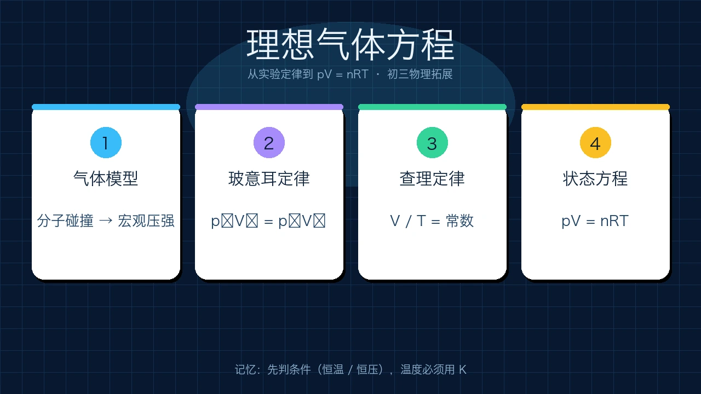
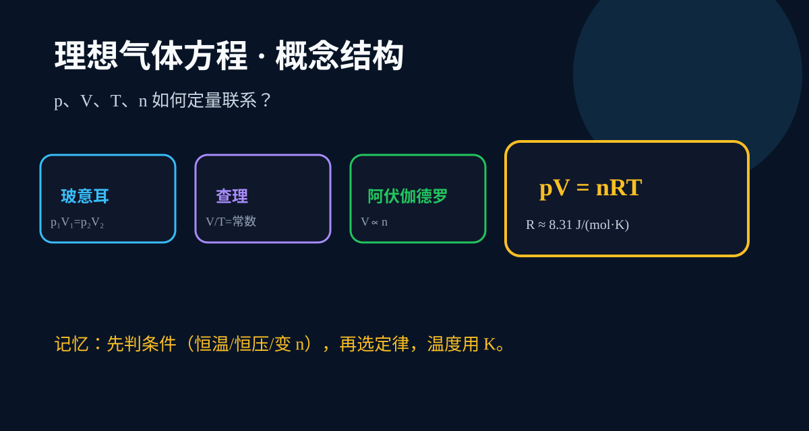
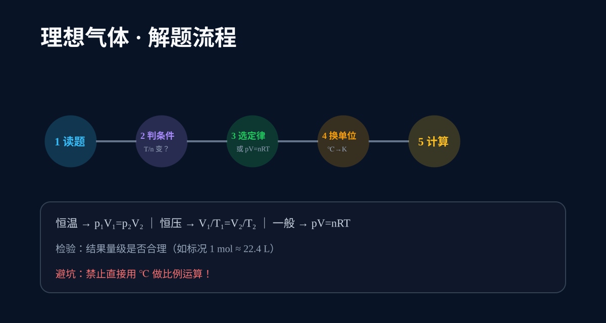

ABT Story
角色任务：气体状态分析师
And 已有经验
你知道大气有压强，温度用 ℃ 测量，给自行车打气时气筒里的空气会被压缩。
But 真实卡点
生活经验只能说“越压越费劲”，却无法定量预测：若体积减半，压强会增大多少？
Therefore 本课任务
把气体看成大量分子碰撞产生的宏观效果，用实验定律建立 p、V、T、n 之间的方程，并能算题。
打气筒越打越费劲、高压锅能煮得更熟——气体压强、体积、温度之间究竟满足什么定量关系？

选一个起点，后面的例题与 AI 学伴会围绕你的问题展开。
选择或输入后，本课会围绕你的问题展开。
你知道大气有压强，温度用 ℃ 测量，给自行车打气时气筒里的空气会被压缩。
生活经验只能说“越压越费劲”，却无法定量预测：若体积减半，压强会增大多少？
把气体看成大量分子碰撞产生的宏观效果，用实验定律建立 p、V、T、n 之间的方程，并能算题。
理想气体是对真实气体在温度不太低、压强不太高时的简化模型，假设：
一定质量的理想气体，在温度不变时，压强与体积成反比：
生活例子：用注射器堵住出口后推活塞，体积 V 减小，内部压强 p 增大。
一定质量的理想气体，在压强不变时，体积与热力学温度成正比：
注意：这里的 T 必须是热力学温度（单位 K），不能用摄氏温度 ℃ 直接代入！
| 符号 | 物理量 | 国际单位 | 常用换算 |
|---|---|---|---|
| p | 压强 | 帕 Pa | 1 atm ≈ 1.01×10⁵ Pa |
| V | 体积 | 立方米 m³ | 1 L = 10⁻³ m³ |
| n | 物质的量 | 摩尔 mol | 标况 1 mol ≈ 22.4 L |
| T | 热力学温度 | 开尔文 K | T(K) = t(℃) + 273 |
| R | 气体常量 | J/(mol·K) | R ≈ 8.31 |
= 273 K
= 293 K
= 373 K
固定 n = 1 mol，拖动滑块，观察 pV 与 nRT。
拖动滑块，核对 pV 与 nRT。
气体 20 ℃ 下体积 4.0 L、压强 1.0×10⁵ Pa。等温压缩到 2.0 L，求末压强。
p₂ = p₁V₁/V₂ = 2.0×10⁵ Pa
27 ℃ 体积 3.0 L，压强不变加热到 127 ℃。T₁=300 K，T₂=400 K。
V₂ = 3.0 × 400/300 = 4.0 L
0 ℃、1.01×10⁵ Pa、2 mol，R=8.31。V = nRT/p ≈ 0.0449 m³ ≈ 44.9 L
必须用 K。
p、V、R 要配套。
打气进气时不能用 pV=常数。
恒温下体积越大压强越小。
夏季轮胎温度从 20 ℃ 升到 50 ℃，体积几乎不变。请定性说明胎压为何升高，并写出定量估算思路。

